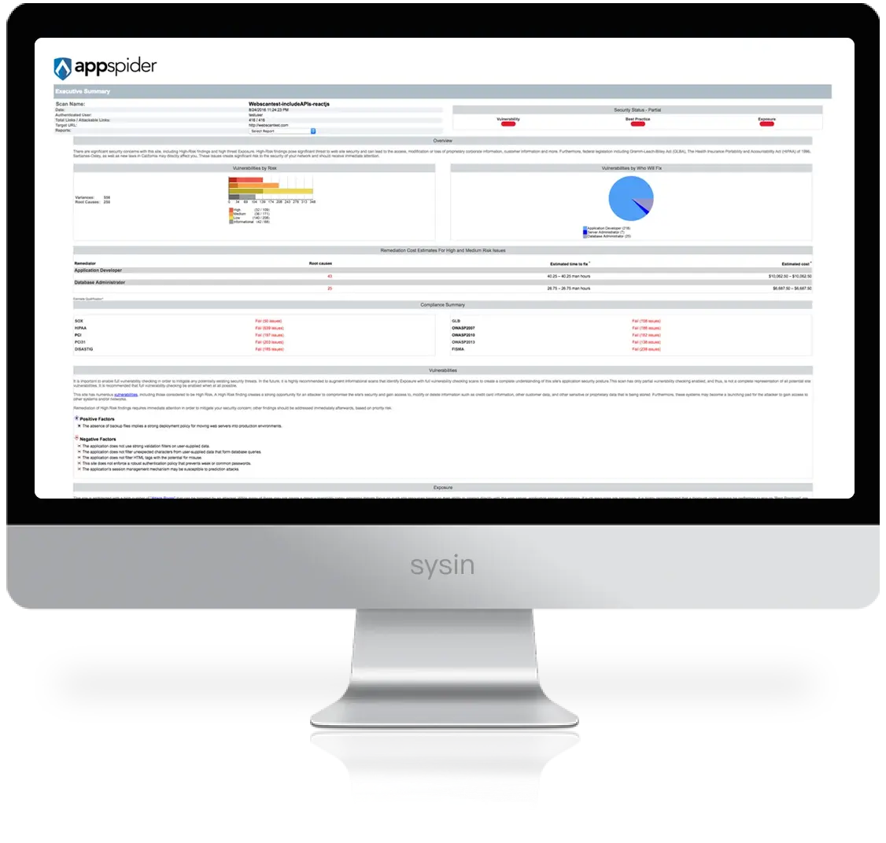

请访问原文链接：AppSpider 7.5.025 for Windows - Web 应用程序安全测试 查看最新版。原创作品，转载请保留出处。
作者主页：sysin.org
AppSpider
没有任何应用程序未经测试，没有未知风险

当今的安全团队负责保护数百个应用程序，这些应用程序包含复杂的富客户端和 API，需要遵循行业与政府法规，并持续跟进黑客攻击趋势。对他们来说，构建有效的应用安全计划不仅仅是对 Web 应用界面进行爬取，而是要实现对应用的全面覆盖，并利用更复杂的攻击方法来应对现代应用所使用的技术。
应用安全本身很难，但使用应用安全工具不应该如此复杂 (sysin)。应用安全扫描通常有上千种选项，而 Rapid7 的应用安全产品基于多年的实践经验提供了系统默认配置，让你可以将更多精力放在修复漏洞上。
通过 AppSpider，你可以规划、控制和衡量扫描，并在所有应用扫描数据中查看整体趋势，从而跟踪安全状况的改进。最终，AppSpider 帮助你评估并优先处理最高风险区域，进而构建现代化的企业级应用安全计划。
Rapid7 AppSec Solutions - Rapid7 应用安全解决方案
AppSpider 是一款动态应用安全测试（DAST）解决方案，可用于扫描 Web 与移动应用中的漏洞。
AppSpider 的核心技术是 Universal Translator（通用转换器），它能够解析现代 Web 与移动应用所使用的新技术（如 AJAX、HTML5 和 JSON），同时也能爬取传统应用。
AppSpider 可部署在本地、托管环境或作为托管服务使用 (sysin)，能够帮助你有效管理应用安全计划，提供深入分析、全面覆盖以及复杂的攻击方法。
AppSpider 的优势包括：
- 广泛覆盖
- 高级认证
- 集成能力
- 交互式报告
- 分布式与可扩展架构
- 集中化控制
- 持续站点监控
- 对基于 OpenAPI 规范（前称 Swagger）构建的 API 进行端到端测试
系统要求
AppSpider Pro System Requirements
The following system requirements are necessary to ensure you have the best experience with AppSpider Pro (sysin).
Hardware requirements:
| Hardware | Minimum |
|---|---|
| Processor | Quad-core |
| RAM | 6 GB |
| Disk space | 500 GB |
| Network interface | 1 |
Scan Engine requirements:
| Hardware | Minimum |
|---|---|
| Processor | Quad-core |
| RAM | 6 GB |
| Disk space | 100 GB |
| Network interface | 1 |
Operating Systems:
| Platform | Versions |
|---|---|
| Microsoft Windows Server | Microsoft Windows Server 2022, Microsoft Windows Server 2019, Microsoft Windows Server 2016 |
| Microsoft Windows | Microsoft Windows 11, Microsoft Windows 10 Pro/Enterprise |
Browsers:
We support the most recent version of the following browsers:
- Google Chrome (latest)
- Mozilla Firefox (latest)
Additional requirements for AppSpider Pro:
- Microsoft .NET Framework 4.8 Redistributable Package
新增功能
应用程序安全 AppSpider
AppSpider 版本 7.5.025
软件发布日期：2026 年 3 月 31 日 | 发行说明发布时间：2026 年 3 月 31 日
新功能：
- Web 与应用框架漏洞检测 - 应用程序安全现已支持检测 Drupal 和 WordPress Core 中的已知漏洞，使您能够评估当前软件版本的风险。
改进：
- AppSec 扫描引擎
- JS Leaks 攻击 - 解决了在
Chromium扫描中攻击无法正确完成的问题。 - 攻击模块更新 - 更新了分析数据，并增加了对最新
Drupal版本的检测支持。
- JS Leaks 攻击 - 解决了在
- R7 爬虫
- 事件生成 - 改进生成逻辑，使事件更加聚焦；为
contentEditable元素新增了onkeydown支持。 - 浏览器管理 - 增强了在
R7Crawler管理代码中对对话框及边界情况的处理 (sysin)。 - 网络拦截 - 改进了在
Chromium扫描过程中对弹窗和新标签页的处理。
- 事件生成 - 改进生成逻辑，使事件更加聚焦；为
修复：
- AppSec 扫描引擎
- 宏序列 - 修复了攻击过程中序列未被正确添加的问题。
- R7 爬虫
- 基础 HTTP 认证 - 修正了逻辑，仅在必要时在
Chromium扫描中添加认证头。 - ChromeHost - 修改了脚本注入方式，防止在宏或爬取过程中影响网页功能。
- 基础 HTTP 认证 - 修正了逻辑，仅在必要时在
- AppSpider Pro
- 兼容性 - 修复了与旧版本配置的兼容性问题。
下载地址
AppSpider v7.5.025 for Windows x64 - released March 31, 2026
更多相关产品：
- Magic Quadrant for Application Security Testing 2022
- Magic Quadrant for Application Security Testing 2023
更多：HTTP 协议与安全

文章用于推荐和分享优秀的软件产品及其相关技术，所有软件默认提供官方原版（免费版或试用版），免费分享。对于部分产品笔者加入了自己的理解和分析，方便学习和研究使用。任何内容若侵犯了您的版权，请联系作者删除。如果您喜欢这篇文章或者觉得它对您有所帮助，或者发现有不当之处，欢迎您发表评论，也欢迎您分享这个网站，或者赞赏一下作者，谢谢！
 支付宝赞赏
支付宝赞赏  微信赞赏
微信赞赏赞赏一下
敬请注册！点击 “登录” - “用户注册”（已知不支持 21.cn/189.cn 邮箱）。 请勿使用联合登录（已关闭）。